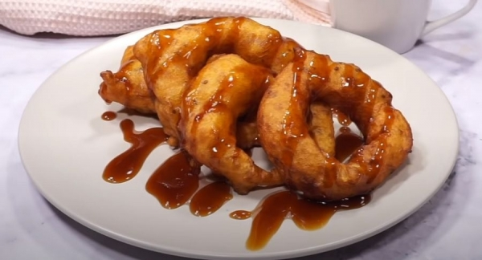

Postres y dulces
Picarones

Ingredientes:
- 15 gr de levadura seca activa por ejemplo Royal
- 4 cucharadas de azúcar
- 1/2 kg de zapallo
- 1/2 kg de camote naranja
- 1 cucharadita de anis
- 5 clavos de olor
- 2 ramas de canela
- 4 tazas de agua
- 1/2 kg de harina
- Sal
- 400 g de chancaca (panela). Si no es posible acceder a este ingrediente reemplázalo con azúcar en la misma cantidad.
- 225 g 1 taza de azúcar rubia o moreno (depende del país)
- 2 tazas de agua
- Ralladura de piel de 1 limón amarillo y grande, 1 lima (verde y pequeño) y 1 naranja
- 6 clavos de olor
- 1 rama de canela
- 1 cucharadita de anís
- 1 hoja de higo. Aunque sé que es muy difícil de conseguir en el extranjero. Si no hay, nos conformamos sin ella.
Preparación:
- Primero pela el zapallo, los camotes, córtalos en cuadros para que se cocine más rápido y ponlos a hervir en una olla con 3 tazas de agua junto con el anís, el clavo de olor y las ramas de canela.
- Cuando el zapallo y el camote estén cocinados ponlos en un recipiente separándolos de los demás ingredientes. Luego hay que hacerlos puré, para eso puedes usar lo que tengas a mano y sea más fácil para ti, como por ejemplo, un tenedor, prensapapas o licuadora.
- Ahora asegúrate de que el líquido restante de la cocción esté tibio (sólo dos tazas), ponlo en un recipiente de cristal (de preferencia) y agrega la levadura, 4 cucharadas de azúcar, una pizca de sal, mezcla bien y deja reposar por 15 minutos aproximadamente. El resultado después de este tiempo debe ser que la levadura haya crecido.
- Vamos con la masa, en un bol agrega el puré de zapallo y camote, a continuación la levadura antes preparada y mezcla fuertemente hasta que se mezcle completamente.
- Luego echa la mitad de la harina y el líquido restante del puré de zapallo y camote, mezcla fuertemente hasta que quede una consistencia ligosa, después de un rato agregas la otra mitad de la harina y si lo prefieres un poquito de agua para facilitar la mezcla. Es posible que sientas que te falta un poco de harina, si lo crees conveniente agrega un poco más pero poco a poco sin pasarte. El resultado final es una masa ligosa que no se pega fácilmente en las manos.
- Cubre la masa con un paño o tela y déjalo reposar por 2 horas aproximadamente.
- Ahora aprovecha este tiempo para preparar la Miel de Chancaca, la receta está más abajo.
- Después de las 2 horas debe de haber crecido la masa. Luego calienta una sartén y echa aceite generosamente, recuerda que los Picarones deben flotar mientras los fríes.
- El aceite debe estar caliente pero no demasiado porque los Picarones se fríen rápido y si lo tienes muy caliente no te dará tiempo para poner y quitar.
- Prepara un bol con agua y ponlo cerca para que mojes tus dedos entre picaron y picaron.
- Para freír, primero moja tus dedos en el agua, luego coge un poco de masa entre tus dedos, acércate a la sartén y crea un circulo con un orificio en el centro (como un donut) y ponlo en el aceite caliente con mucho cuidado de no quemarte. Si el orifico no aparece o no sale bien puedes ayudarte con una cuchara de palo para hacerlo.
- Vigila que no se quemen porque se fríen rápido, cuando veas que se ponen un poco morenos dale la vuelta. ¡Pero no te quedes mirando! ? prepara otro picaron y agrégalo a la sartén. Depende de cada persona coger el ritmo entre poner y dar la vuelta sin que se quemen. Estoy seguro que con la practica te convertirás en un «maestro picaronero.
Para la miel de chancaca:
- Coloca en una olla dos tazas de agua más todos los ingredientes y cocina por 30 minutos aproximadamente.
- El tiempo depende del tipo de cocina y la fuerza del fuego, ten en cuenta que la miel no debe quedar ni muy espesa ni muy liquida.
- Cuando esté lista déjala enfriar por unos 5 minutos y colócala en un recipiente previamente utilizando un colador para que sólo te quede el liquido.
Consejos:
- Es posible que te cueste mucho esfuerzo preparar la masa porque no es fácil, se necesita mucha fuerza y paciencia. Si lo prefieres puedes utilizar una batidora de mano, será todo más rápido.
- Y el segundo consejo está relacionado con el anterior, utiliza mientras bates 3 huevos, esto le dará una buena consistencia y además ayudará a crecer. ¡Suerte!
Arroz con leche

Ingredientes:
- 1 taza de arroz
- 3 tazas de agua
- 1 lata de leche condensada
- 1 lata de leche evaporada
- 1 palito de canela
- 2 clavos de olor
- 1 pedazo de cáscara (piel de naranja o limón)
- 1 cucharadita de vainilla
- 50 gramos de pasas opcional
- Canela molida para espolvorear
Preparación:
- Cocina en una olla el arroz con las tres tazas de agua, la canela, los clavos de olor, las pasas (opcional), la cáscara de naranja a fuego medio hasta que el arroz se haya cocido y el agua evaporado.
- Retira la cáscara de canela.
- Agrega la leche condensada, la leche evaporada y cocina a fuego lento hasta que el arroz quede en su punto.
- Justo después añade la vainilla, mezcla y cocina por cinco minutos más.
- Sirve en un recipiente y espolvorea la canela en polvo
Consejos:
- Remoja el arroz con agua por 10 minutos para que suelte el almidón. Esto es para que el arroz absorba mejor la leche.
- Después de añadir las leches agrega 1/4 de copa de vino Oporto y cocina por 3 minutos más removiendo suavemente.
- Utiliza una cuchara de palo (madera), esto es para no maltratar el arroz mientras movemos y para que los granos nos queden enteros y no como una masa.
Mazamorra Morada
Ingredientes:
- 1,5 kg de maíz morado
- 1 piña
- 2 manzanas
- 1 membrillo
- 1 limón (lima en otros países fuera de Perú)
- 5 litros de agua (3 litros serán para la Mazamorra y los 2 restantes para cuando quieras refrescarte)
- 3 clavos de olor
- 2 ramas de canela entera
Ingredientes chicha morada:
- 1,5 taza de azúcar 300 gramos
- 1 taza de guindones ciruela pasa
- 100 gramos de guindas secas
- 1 piña en trocitos
- 100 gramos de orejones albaricoque seco
- 100 gramos de harina de camote (batata)
- 100 gramos de harina de chuño (fécula de papa). En la sección de consejos (más abajo) te dejo una opción en caso de que no encuentres harina de camote o chuño
- 1 limón
- Canela entera y en polvo
Preparación chicha morada:
- Hierve por 2 horas el maíz en los 5 litros de agua con la cáscara de piña, las manzanas partidas en dos, el clavo de olor y la canela hasta que el maíz se abra.
- Cuela y vacía la Chicha morada en un recipiente y echa el jugo de limón.
- Agrega piña fresca y membrillo en cuadraditos.
- Reserva 3 litros para la Chicha morada. Los dos litros restantes endúlzalos si deseas y refrigéralos.
Preparación Mazamorra:
- Pon a hervir en una olla la piña en trocitos con la fruta seca (guindones, guindas y orejones), el azúcar y la chicha morada. Espera hasta que la fruta esté cocida.
- Luego disuelve la harina de camote y el chuño con chicha morada fría y agrega a la olla de las frutas cocidas.
- Mueve hasta que coja punto, un poco espeso. Entonces retira del fuego y agrega el jugo de 1 limón.
- Sirve en una dulcera y espolvorea con canela en polvo.
Consejos:
- En caso de no conseguir ni harina de camote o harina de chuño puedes utilizar harina de maíz Maizena
- Para que el sabor de los frutos secos sea más intenso, recomendamos remojar desde una noche anterior los frutos secos.
- Es de suma importancia la calidad de las frutas y frutos secos que utilices. Cuando algunas frutas como la piña o la manzana están un poco pasadas. desprenden un amargo que puede afectar al resultado final de la preparación, por tanto elige los mejores productos para que te salga riquísimo.
Leche asada

Ingredientes:
- 6 huevos
- 1 ¼ de leche fresca
- ¾ tazas de azúcar blanca
- 2 cucharaditas de esencia de vainilla
- 2 cucharaditas de canela en polvo
- 1 rama de vainilla
- 1 rama de canela
Preparación:
- En una olla vierte un vaso de leche y enciende la cocina a fuego lento.
- Coloca en la leche las ramas de vainilla y de canela y mueve por 10 minutos.
- En un recipiente de vidrio bate los huevos con clara y yema incluidos.
- Echa el azúcar y disuélvelo con los huevos.
- Vierte el resto de leche poco a poco a la mezcla de azúcar y huevo.
- Añade las cucharaditas de esencia de vainilla y de canela en polvo.
- Mezcla la leche de la olla con la mezcla que acabas de completar y mueve.
- Retira las ramitas de vainilla y canela de la mezcla.
- Saca seis recipientes pequeños de preferencia de metal y reparte la mezcla.
- Coloca los seis recipientes de metal en una fuente de vidrio (tipo pirex) y vierte agua fría hasta la mitad de los recipientes para hornear a baño María.
- Calienta el horno a 150° centígrados y coloca la fuente dentro por espacio de 1 hora.
Consejo:
-
Es recomendable esperar a que enfríe.
Alfajores

Ingredientes:
- 225 gr de harina sin preparar
- 225 gr de maicena
- 200 gr de mantequilla
- 6 cucharadas de polvo de hornear
- Azúcar en polvo
- 1 paquete de manjar blanco
Preparación:
- En un recipiente mezcla la harina, la maicena, el polvo de hornear y la mantequilla a cuadritos hasta que se forme una masa pareja, una bola.
- Deja esta masa reposar media hora en la refrigeradora.
- Echa un poco de harina sobre el soporte donde pondremos la masa y estírala con un rodillo.
- Con el molde o el cortador de tu preferencia que tengas en casa, colócalo encima de la masa y presiónalo para hacer el corte.
- Sobre un soporte para horno, coloca los moldes de maicena.
- Lleva al horno los alfajores por 15 minutos aproximadamente a 250 grados centígrados.
- Sácalos del horno y rellénalos con manjar blanco en cada uno, finalmente coloca la tapa superior.
- Espolvorea uno a uno con azúcar en polvo y ya estarán listos.
Consejos:
- Hornea en papel manteca o papel parafinado. Despegan mas fácil y se dañan menos.
- Deja los Alfajores armados de un día para otro. Se pueden manipular mejor y se empacan más rápido.
- ¿Te quedo la masa muy seca? No hay problema, agrégale una yema mas de huevo y listo.